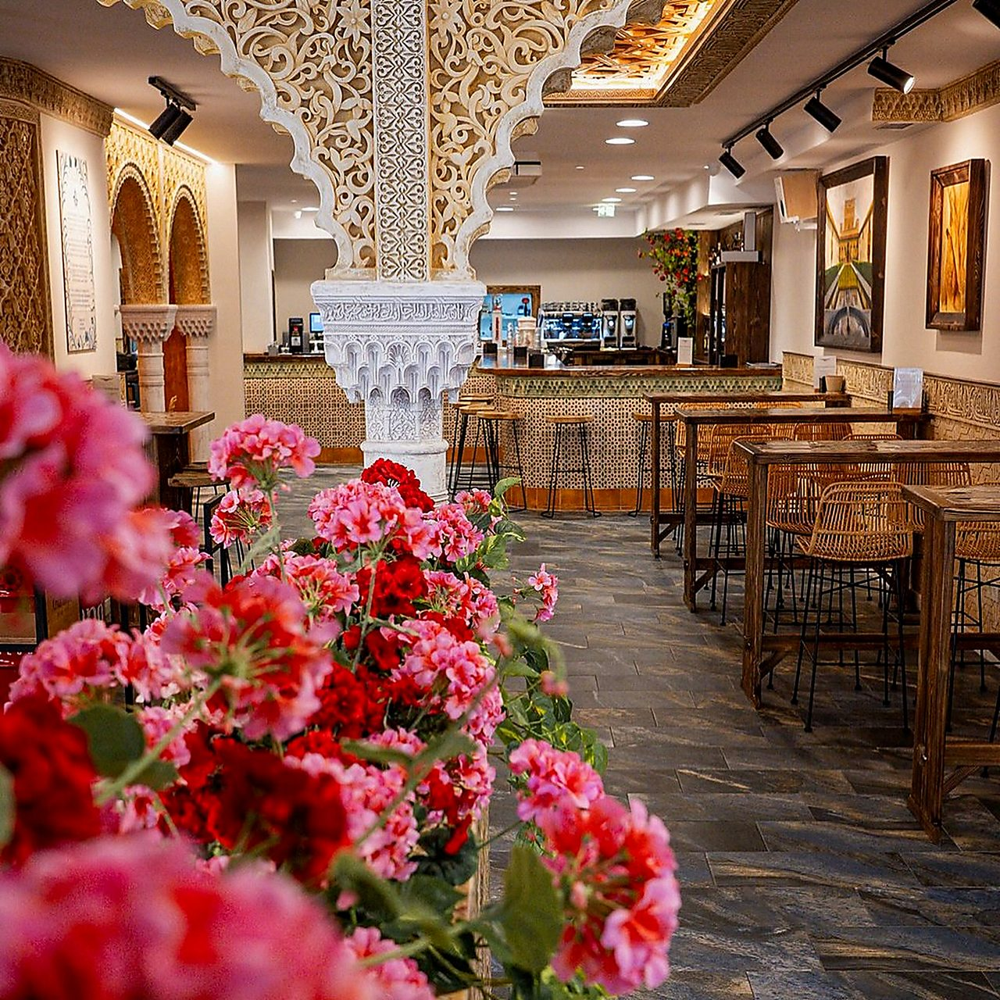
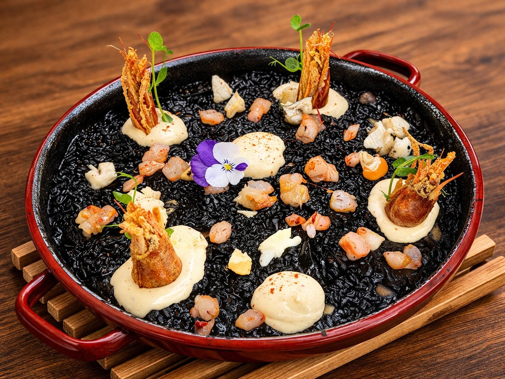
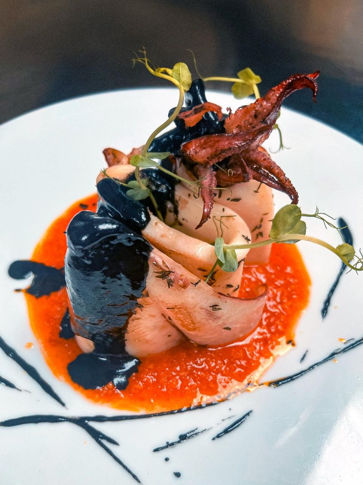
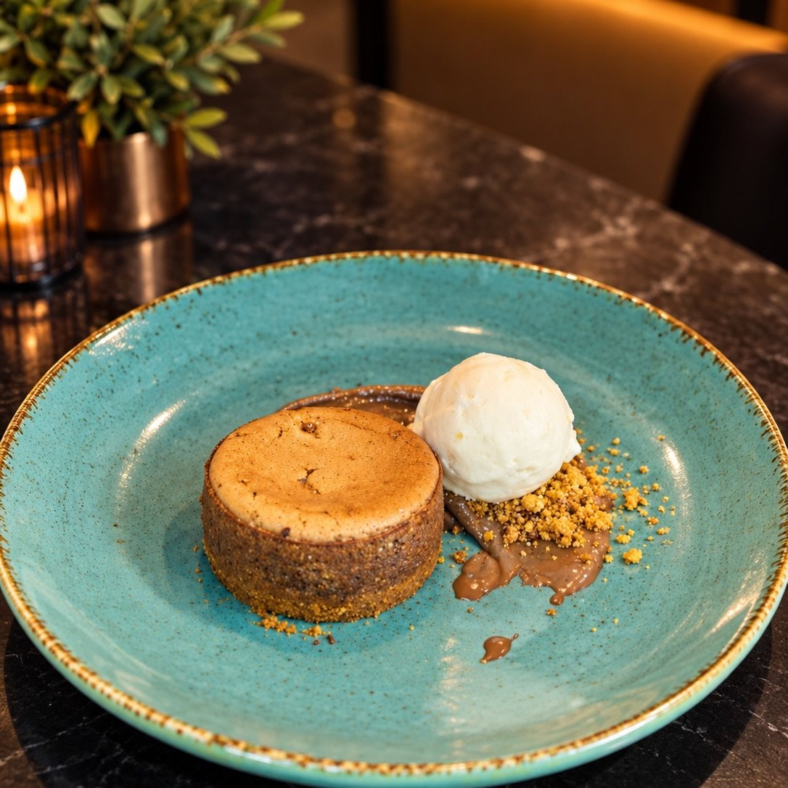
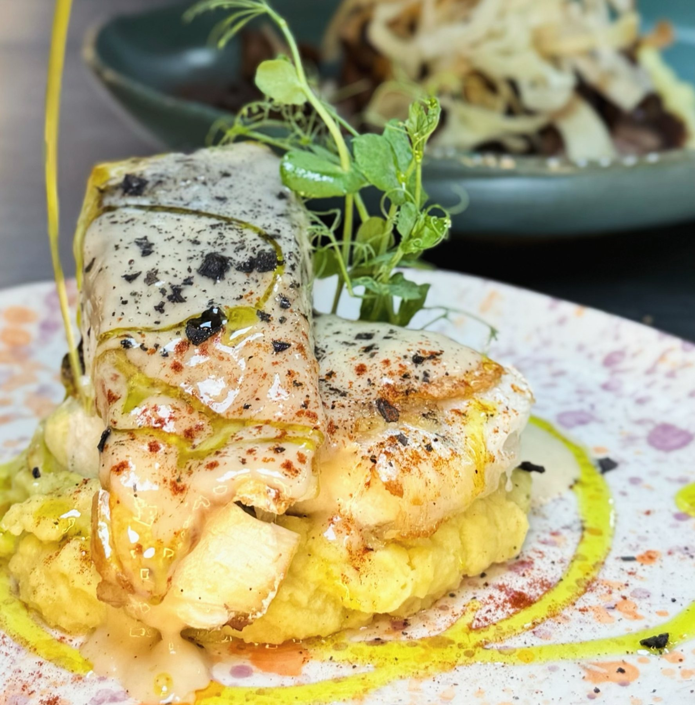

El Patio
Desayunos andaluces, molletes, tostadas con AOVE, tapas y aperitivo. La parte más informal de la casa.
Ver el espacioSabores del sur que conquistan el norte
Toque para entrar

Calle Rosal, 22-24 · Oviedo
Alta cocina andaluza, flamenco y una experiencia creada para saborear, descubrir y recordar.
Un edificio de 1799 en el casco antiguo, con las yeserías sacadas de moldes de la Alhambra, geranios en el patio y un tablao donde el flamenco no es un añadido. Se desayuna con mollete de Antequera y se cena recorriendo las ocho provincias andaluzas.
Del sur al norte
Se entra por una calle del Oviedo antiguo, a dos pasos del Fontán, y se sale con sabor a aceite temprano, a barro cocido y a compás.
La Taranta nació del empeño de traer Andalucía entera —su cocina, su cerámica, su arquitectura y su flamenco— al corazón de Asturias. No una imitación: una traducción honesta, hecha con la despensa del sur y el oficio de una cocina de alto nivel.
El nombre no es casual. La taranta es un palo del flamenco, un cante minero nacido en Jaén, tierra del propietario y del cocinero. Del sur minero al norte minero: dos formas de entender el trabajo, la tierra y la fiesta.
Conocer la historia
Yeserías reproducidas a partir de moldes de arcos nazaríes de la Alhambra
Andalucía en cada plato
Aceites tempranos de Jaén, ibérico de Jabugo, pescado de lonja, arroces melosos y una barra de tapas donde empezar por lo pequeño.




Las ocho provincias
El menú degustación recorre las ocho provincias andaluzas en ocho pases, más un homenaje final. Elija una provincia en el mapa.
Cuatro casas en una
Cada espacio tiene su propio ritmo: el desayuno y la tapa, el comedor de mantel largo, la sala privada para celebrar y el tablao donde suena el flamenco.
Desayunos andaluces, molletes, tostadas con AOVE, tapas y aperitivo. La parte más informal de la casa.
Ver el espacio
El comedor principal: lámparas granadinas, tejas centenarias y la carta de alta cocina andaluza.
Ver el espacio
Sala para grupos, comidas de empresa, presentaciones y celebraciones privadas.
Organizar un evento
Escenario propio para el flamenco, con arcos, sillas de enea y vista al mirador de la Alhambra.
El flamenco en casa
Calle Rosal, 22-24 · Oviedo. Edificio con fachada de 1799
La casa
La Taranta abrió en marzo de 2025 en un edificio histórico del Oviedo antiguo, cuya fachada data de 1799 y en el que nació el general Salvador Díaz-Ordóñez. El proyecto llevó tres años de trabajo.
Dentro, las yeserías reproducen arcos nazaríes tomados de la sala de los Abencerrajes, el Patio de los Leones y el Palacio de Comares; los grandes formatos pintados son obra del artista cubano Euliser Polanco, y la reproducción del vaso de las gacelas se hizo en exclusiva con técnica de dorado nazarí.
Leer la historia completaEl Tablao
La casa tiene tablao propio. El nombre del restaurante viene de un cante minero de Jaén y el propietario, Juan Carlos Revert, bailó flamenco antes de dedicarse a la hostelería.
La programación de actuaciones se anuncia en el Instagram del restaurante. Consúltenos fechas y aforo para una velada concreta.
El tablao, con el mirador de arcos al fondo
Celebraciones
La Bodega y el tablao permiten montar desde una comida de equipo hasta una presentación de producto con cierre flamenco.
Calle Rosal, 22-24 · Oviedo. Reserve por teléfono, por WhatsApp o desde el formulario.